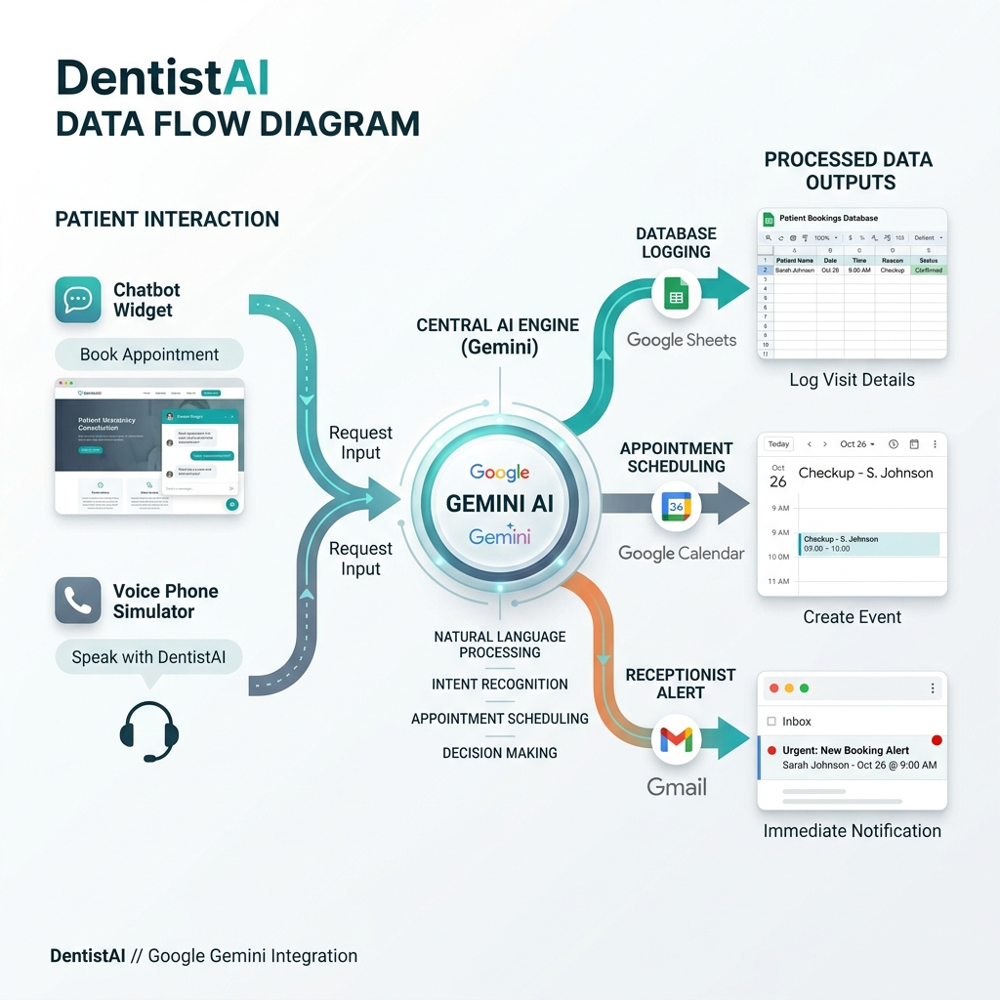

Sub-folder 1!
Intelligent Virtual Receptionist & SaaS CRM Sync Engine
Be10X Hackathon B16
Submission Deliverable
Dental clinics and dental professionals lose significant patient bookings, lead-generation opportunities, and emergency triage response times due to receptionist constraints and manual booking processes. Key administrative bottlenecks include:
🎯 The Target Metrics: Compress standard booking workflows from 10 minutes down to 5 seconds. Reduce multi-clinic database setups from 4 hours down to 2 seconds.
DentistAI is an autonomous 24/7 patient-facing virtual receptionist (chat and voice simulator) integrated with a secure Multi-Clinic SaaS CRM dashboard. It functions as a complete digital worker running natively inside CDNs without needing complex backend node servers.
| Feature | What It Does | AI Core Value |
|---|---|---|
| Gemini NLP Brain | Chats natively, explains packages, handles financial/fear objections. | Replaces human customer support judgment dynamically. |
| Language Autodetect | Detects English, Hindi, and Marathi query formats. | Identifies context and adjusts dropdown selections. |
| Speech STT / TTS | Transcribes user microphones and speaks replies. | Provides accessibility bypasses for voice-guided inquiries. |
| Call Simulator | Simulates in-browser telephony calls, bookings, and voicemail. | Provides a mockup of 24/7 automated receptionist call lines. |
| SaaS Brand Swap | Appends clinicId in URL to dynamically apply colors & isolate sheets. | Ensures immediate tenant onboarding and self-initialization. |
The system routes unstructured user chat/speech through the Gemini NLP engine, extracts intent commands, and writes them directly to Google Sheets database tables while triggering calendar entries and email alerts.

DentistAI satisfies the hackathon's "Hours-to-Seconds Test" by eliminating manual overhead completely: